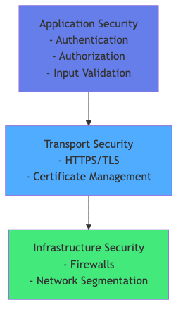
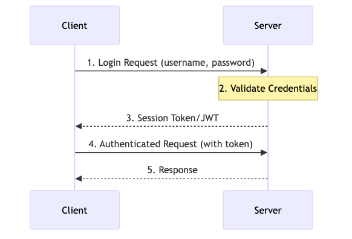

Contenu du cours
Toutes les sections du cours — cliquez sur un titre pour développer son contenu.
🔒 Fondamentaux de Sécurité
CIA Triad — Les trois piliers de la sécurité
| Pilier | Définition | Exemple technique |
|---|---|---|
| Confidentiality | Garantir que l'information n'est accessible qu'aux personnes autorisées | Chiffrement AES-256, TLS, tokens JWT |
| Integrity | Garantir que l'information n'a pas été altérée de façon non autorisée | Signatures numériques HMAC, SHA-256 |
| Availability | Garantir que les systèmes restent accessibles aux utilisateurs légitimes | Protection DDoS, rate limiting, redondance |
Couches de sécurité
- Transport : HTTPS/TLS — chiffrement des communications réseau
- Application : Authentification, autorisation, validation des entrées
- Données : Chiffrement au repos, masquage des données sensibles
- Infrastructure : Pare-feux, VPN, cloisonnement réseau
OWASP Top 10 — 2021 (éléments essentiels)
| Rang | Vulnérabilité | Impact |
|---|---|---|
| A01 | Broken Access Control | Accès non autorisé aux ressources |
| A02 | Cryptographic Failures | Exposition de données sensibles |
| A03 | Injection | Exécution de code malveillant (SQL, LDAP, OS) |
| A04 | Insecure Design | Failles architecturales fondamentales |
| A07 | Broken Authentication | Compromission de comptes, sessions |
| A02 | Sensitive Data Exposure | Fuite de mots de passe, données financières |
| A03 | XSS (Cross-Site Scripting) | Injection de scripts dans le navigateur |
| A01 | IDOR (Insecure Direct Object Reference) | Accès à des ressources d'autres utilisateurs |

🔑 Authentification vs Autorisation
Définitions distinctes
| Concept | Question fondamentale | Mécanisme | Résultat |
|---|---|---|---|
| Authentification | Qui êtes-vous ? | Credentials, tokens, biométrie | Identité prouvée (Principal) |
| Autorisation | Que pouvez-vous faire ? | Rôles, permissions, politiques | Accès accordé ou refusé |
Flux d'authentification typique
- Client — soumet ses credentials (login + mot de passe)
- Server — vérifie les credentials contre l'IdentityStore
- Server — génère un token signé (JWT) avec claims et expiration
- Client — reçoit le token et le stocke (mémoire, cookie HTTP-only)
- Client — envoie le token dans chaque requête suivante (
Authorization: Bearer <token>) - Server — valide la signature du token et contrôle les rôles
Multi-Factor Authentication (MFA)
- Facteur 1 (connaissance) : mot de passe, PIN, question de sécurité
- Facteur 2 (possession) : TOTP (Google Authenticator), SMS OTP, clé FIDO2
- Facteur 3 (inhérence) : empreinte digitale, reconnaissance faciale
🔐 Méthodes d'Authentification
Basic Auth
- Credentials encodés en Base64 dans l'en-tête HTTP :
Authorization: Basic dXNlcjpwYXNz - Simple à implémenter, mais les credentials transitent à chaque requête
- ⚠️ Non sécurisé sans HTTPS — Base64 n'est pas du chiffrement
- Usage : APIs internes, outils de développement
Form-Based Authentication
- Formulaire HTML dédié (login page) soumis via POST
- Session créée côté serveur après succès (stateful)
- Protection obligatoire contre CSRF
- Jakarta EE :
@FormAuthenticationMechanismDefinition
Token-Based Authentication (JWT)
- Token auto-porteur signé cryptographiquement
- Stateless — aucune session serveur nécessaire
- Transmis dans
Authorization: Bearer <token> - Idéal pour APIs REST et architectures microservices
Certificate-Based Authentication (mTLS)
- Certificat X.509 côté client et serveur
- Mutual TLS — authentification bidirectionnelle
- Usage : service-to-service dans les microservices, communications critiques
Comparaison des méthodes
| Méthode | État | Sécurité | Complexité | Use Case |
|---|---|---|---|---|
| Basic Auth | Stateless | ⚠️ Faible sans TLS | Très simple | APIs dev/internes |
| Form-Based | Stateful | ✅ Bonne | Moyenne | Applications web |
| JWT Bearer | Stateless | ✅ Bonne | Moyenne | APIs REST, microservices |
| Certificate (mTLS) | Stateless | ✅✅ Excellente | Élevée | Service-to-service |
🛡️ Modèles d'Autorisation
RBAC — Role-Based Access Control
Les permissions sont assignées aux rôles, les utilisateurs obtiennent des rôles.
- ADMIN — accès complet (lecture, écriture, suppression, administration)
- USER — accès en lecture et écriture sur ses propres ressources
- VIEWER — accès en lecture seule
ABAC — Attribute-Based Access Control
Les décisions d'accès sont basées sur des attributs de plusieurs dimensions :
- User attributes : département, clearance level, localisation
- Resource attributes : classification des données, propriétaire, sensibilité
- Environment attributes : heure, adresse IP, état du contexte
Sécurité déclarative vs programmatique
| Approche | Mécanisme | Exemple | Avantage |
|---|---|---|---|
| Déclarative | Annotations Jakarta EE | @RolesAllowed("ADMIN") | Simple, lisible, maintenable |
| Programmatique | SecurityContext API | securityContext.isCallerInRole("ADMIN") | Logique conditionnelle fine |
| web.xml | Contraintes de sécurité XML | <security-constraint> | Configuration externe |
⚙️ Jakarta Security API
Architecture Jakarta Security
- @HttpAuthenticationMechanism — intercepte les requêtes HTTP, extrait et valide les credentials
- @IdentityStore — vérifie les credentials et retourne les groupes/rôles de l'utilisateur
- SecurityContext — API programmatique pour interroger l'identité courante
- HttpMessageContext — fournit l'accès au contexte HTTP dans les mécanismes
Mécanismes built-in
| Annotation | Type | Usage |
|---|---|---|
@BasicAuthenticationMechanismDefinition | Basic Auth | APIs simples, outils internes |
@FormAuthenticationMechanismDefinition | Form-Based | Applications web avec login HTML |
@CustomFormAuthenticationMechanismDefinition | Custom Form | Login AJAX, formulaires modernes |
Flux Jakarta Security
- Requête HTTP reçue par le conteneur Jakarta EE
HttpAuthenticationMechanism.validateRequest()est invoqué- Les credentials extraits sont transmis à
IdentityStore.validate() - En cas de succès, un
CallerPrincipalCallbackest créé - Le SecurityContext est alimenté avec l'identité et les groupes
- Les annotations
@RolesAllowedsont évaluées
🎫 JWT et MicroProfile JWT
Structure d'un Token JWT
Un JWT est composé de trois parties encodées en Base64URL séparées par des points : header.payload.signature
| Partie | Contenu | Exemple |
|---|---|---|
| Header | Algorithme de signature et type | {"alg":"RS256","typ":"JWT"} |
| Payload | Claims : identité, rôles, expiration | {"sub":"alice","groups":["USER"],"exp":1234567890} |
| Signature | HMAC/RSA de header + payload | RSASHA256(base64Header + "." + base64Payload, key) |
Claims standards (RFC 7519)
- iss (issuer) — émetteur du token
- sub (subject) — identifiant de l'utilisateur
- aud (audience) — destinataire(s) attendu(s)
- exp (expiration time) — date d'expiration Unix timestamp
- iat (issued at) — date d'émission Unix timestamp
- groups (MicroProfile) — liste des rôles/groupes de l'utilisateur
Configuration MicroProfile JWT
@LoginConfig(authMethod="MP-JWT")sur la classeApplication@RolesAllowed({"USER","ADMIN"})sur les méthodes JAX-RS@Inject @Claim("sub") String subject— injection de claims dans les beans CDI- Propriétés :
mp.jwt.verify.publickey.locationetmp.jwt.verify.issuer

🔏 HTTPS/TLS — Configuration
Chiffrement asymétrique
- Clé publique — partagée librement, chiffre les données et vérifie les signatures
- Clé privée — secrète, déchiffre et signe
- TLS Handshake : échange de certificats → négociation d'algorithmes → session chiffrée
Types de certificats
| Type | Émetteur | Coût | Confiance navigateur | Usage |
|---|---|---|---|---|
| Self-signed | Vous-même | Gratuit | ❌ Non | Développement, tests |
| CA-signed (DV) | Let's Encrypt, DigiCert | Gratuit / Payant | ✅ Oui | Sites web publics |
| CA-signed (EV) | DigiCert, Sectigo | Payant | ✅ Oui | E-commerce, banque |
Configuration Liberty et bonnes pratiques
- keyStore — contient la clé privée et le certificat du serveur
- trustStore — contient les certificats des CA de confiance
- HSTS header —
Strict-Transport-Security: max-age=31536000; includeSubDomainsforce le HTTPS - Perfect Forward Secrecy — utiliser ECDHE/DHE pour que la compromission de la clé privée n'affecte pas les sessions passées
- TLS 1.2+ obligatoire — désactiver SSLv3, TLS 1.0, TLS 1.1
🌐 Sécurité des APIs REST
CORS — Cross-Origin Resource Sharing
- Mécanisme navigateur qui contrôle les requêtes cross-origin
- Préflight request — requête OPTIONS envoyée avant POST/PUT/DELETE cross-origin
- En-têtes de réponse :
Access-Control-Allow-Origin,Access-Control-Allow-Methods,Access-Control-Allow-Headers - Ne jamais utiliser
Access-Control-Allow-Origin: *avec credentials
Protection CSRF
- Attaque exploitant la confiance du serveur envers le navigateur de la victime
- Token CSRF — valeur aléatoire en session, transmise dans l'en-tête
X-CSRF-Token - Valider avec comparaison en temps constant (
MessageDigest.isEqual()) pour éviter les timing attacks - Cookie
SameSite=Strictcomme défense supplémentaire
Validation des entrées
- Valider tous les inputs côté serveur (Jakarta Validation / Bean Validation)
- Sanitizer les données pour prévenir XSS (encoder les caractères HTML)
- Utiliser des requêtes préparées (JPA criteria, JPQL paramétré) contre l'injection SQL
Rate Limiting et API Keys
- Rate limiting — limiter le nombre de requêtes par IP/token par fenêtre de temps
- API Keys — identification des clients applicatifs (non des utilisateurs)
- OAuth2 — délégation d'autorisation standardisée (préférer pour l'accès tiers)
☁️ Sécurité des Microservices
Authentification service-to-service
- mTLS (Mutual TLS) — chaque service possède un certificat, authentification bidirectionnelle
- JWT Propagation — le JWT utilisateur est transmis de service en service dans l'en-tête
Authorization - Service Accounts — credentials dédiés par service (éviter les credentials partagés)
Gestion des secrets
- Variables d'environnement — méthode basique, injectée par le orchestrateur (Kubernetes Secrets)
- HashiCorp Vault — stockage sécurisé, rotation automatique des secrets
- Jamais committer des secrets dans le code source ou les images conteneur
- MicroProfile Config permet d'injecter des secrets via
@ConfigPropertydepuis l'environnement
Security Headers essentiels
| Header | Valeur recommandée | Protection contre |
|---|---|---|
X-Frame-Options | DENY | Clickjacking |
Content-Security-Policy | default-src 'self' | XSS, injection de ressources |
X-Content-Type-Options | nosniff | MIME sniffing attacks |
Strict-Transport-Security | max-age=31536000; includeSubDomains | Downgrade attacks |
Referrer-Policy | no-referrer-when-downgrade | Fuite d'URL sensibles |